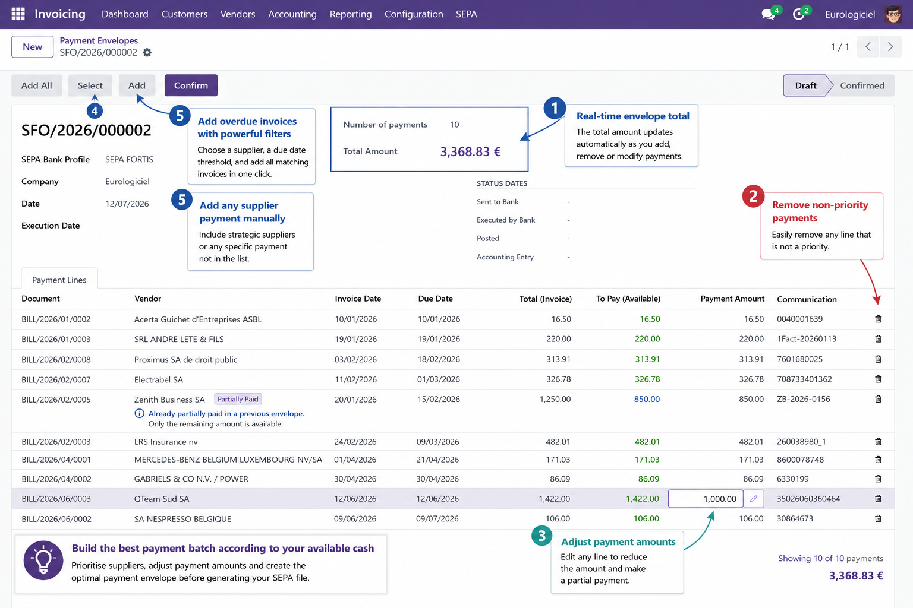
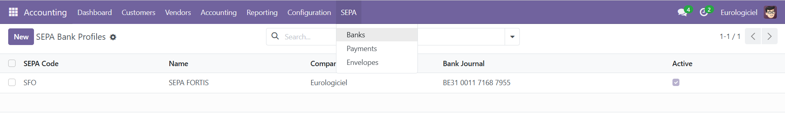
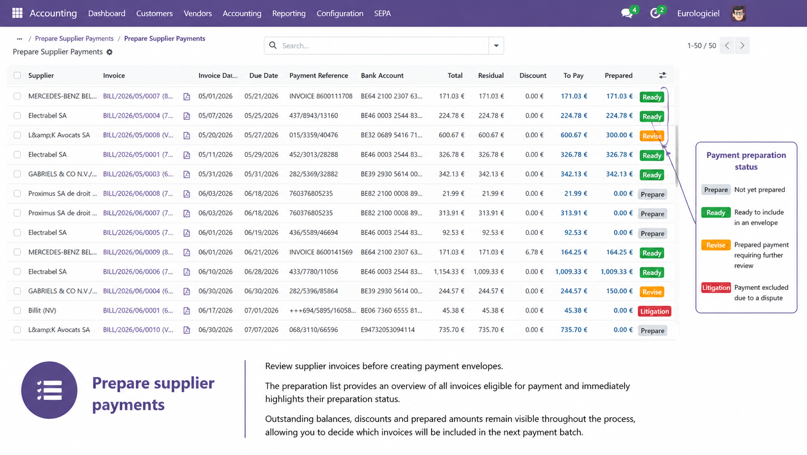
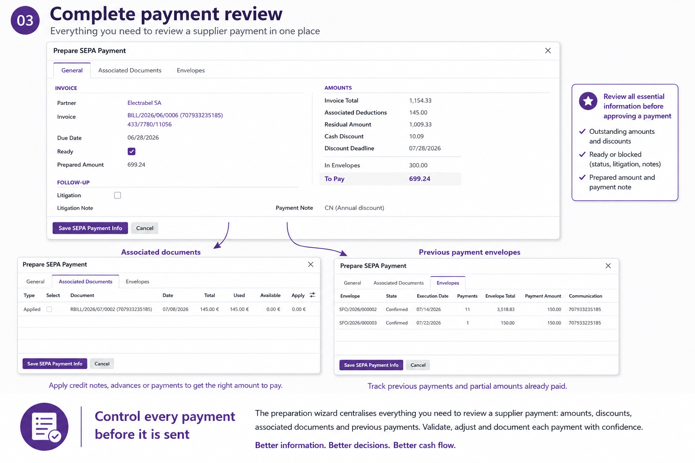
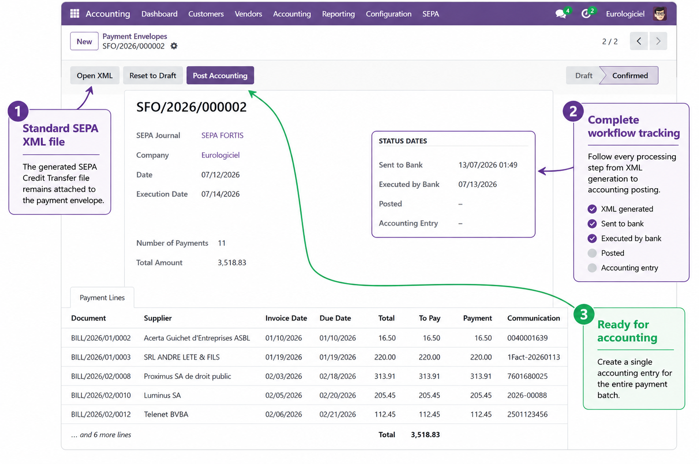
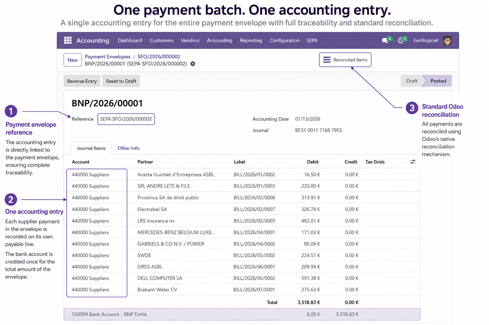

Supplier payment preparation and SEPA Credit Transfer management for Odoo.
Prepare, review and prioritise supplier payments based on your available cash before generating a standard SEPA Credit Transfer file.
Designed for organisations that want to optimise cash flow while keeping full control over supplier payments.

When available cash is limited, paying every due invoice automatically is not always the best option.
With GICA SEPA Payment you can:
The payment envelope acts as a flexible working basket that can be adjusted until it matches your available cash and business priorities.

Configure one SEPA Bank Profile for each bank account and start preparing supplier payments immediately.
The module provides a simple three-step workflow:

Review all supplier invoices eligible for payment before creating a payment envelope.
The preparation list provides an overview of outstanding invoices together with:
Each invoice follows a simple workflow:
This helps accountants organise and prioritise supplier payments before creating the final payment batch.

The Prepare SEPA Payment wizard centralises everything required to validate a supplier payment before it is included in a payment envelope.
The wizard combines three complementary views:
Bringing all relevant information together helps accountants make informed payment decisions while maintaining complete traceability.

Once a payment envelope has been validated, GICA SEPA Payment manages the complete payment workflow.
A standard SEPA Credit Transfer file
(pain.001.001.03) is generated and attached to the payment envelope
for complete traceability.
The payment envelope keeps track of every processing step:
The workflow status provides complete visibility throughout the payment lifecycle.

Once the payment envelope has been executed by the bank, GICA SEPA Payment creates a single accounting entry for the complete payment batch.
Each supplier payment generates its own payable line while the bank account is credited only once for the total amount of the payment envelope.
The accounting entry remains fully linked to its originating payment envelope, ensuring complete traceability between supplier invoices, payment batches and accounting records.
Reconciliation relies entirely on the standard Odoo accounting mechanism.
No parallel accounting.
No proprietary reconciliation process.
The module can be accessed through the standard Odoo web interface on mobile devices.
Mobile access is particularly useful for:
Because of the amount of accounting information displayed, desktop use remains recommended for payment preparation.
Install the complete Accounting application.
The complete Accounting interface should be available.
If necessary, the OCA module account_usability (or an equivalent solution) can be installed to expose the complete Accounting menus.
Only the standard Odoo module:
is required.